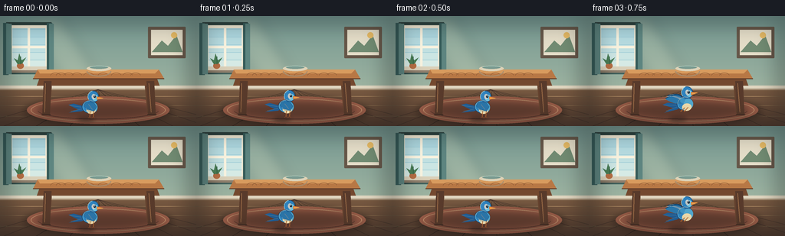
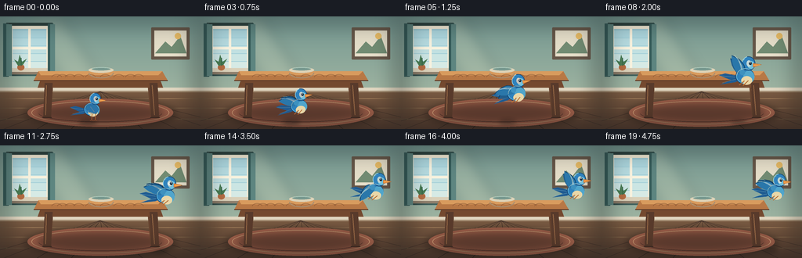
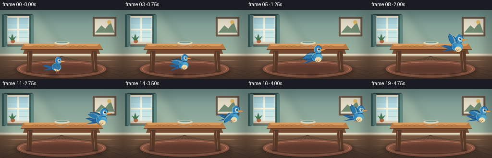
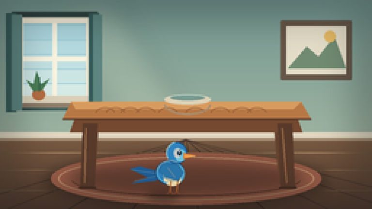
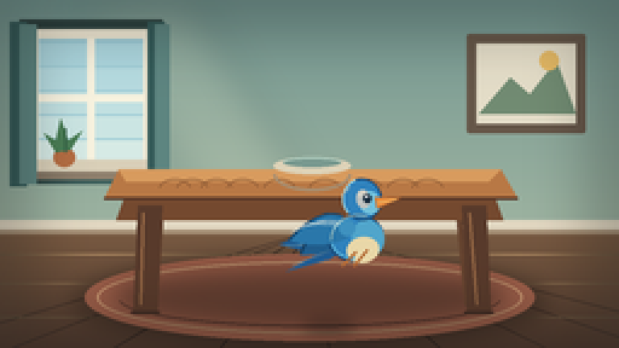
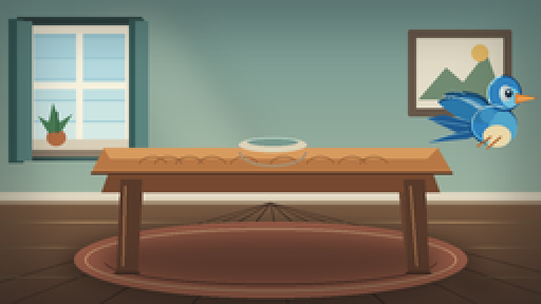
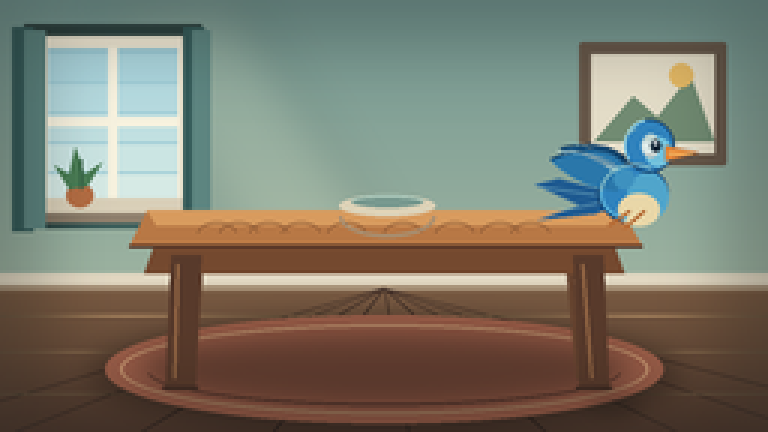
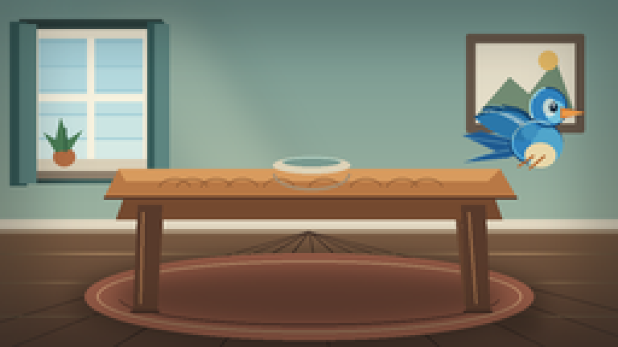

CODING AGENTS AS PIXEL WORLD MODELS
traex/DeepSeek-V4.1-Flash · dynamic_spatial_relationship_0042
点击播放 · 原生 RGB 像素
逐轮保存的候选
回放视频、检查图与代码变化。
每份候选均可单独播放。实际图片检查记录在下方工具轨迹中。
候选 01播放与检查图
点击播放 · 原生 RGB 像素


展开代码变化
--- 上一保存版本
+++ 本次保存版本
@@ -0,0 +1,426 @@
+from __future__ import annotations
+
+import math
+from pathlib import Path
+
+import numpy as np
+from PIL import Image, ImageDraw, ImageFilter
+
+import artifact_io
+
+
+WIDTH = 256
+HEIGHT = 144
+FRAMES = 20
+FPS = 4.0
+SS = 4
+CASE_DIR = Path(__file__).resolve().parent
+
+
+def sc(value: float) -> int:
+ return int(round(value * SS))
+
+
+def box(values):
+ return tuple(sc(v) for v in values)
+
+
+def rgba(hex_color: str, alpha: int = 255):
+ value = hex_color.lstrip("#")
+ return tuple(int(value[i : i + 2], 16) for i in (0, 2, 4)) + (alpha,)
+
+
+def blend(a: tuple[int, int, int], b: tuple[int, int, int], t: float):
+ return tuple(int(round(a[i] * (1.0 - t) + b[i] * t)) for i in range(3))
+
+
+def vertical_gradient(size, top, bottom):
+ width, height = size
+ t = np.linspace(0.0, 1.0, height, dtype=np.float32)[:, None, None]
+ top_arr = np.array(top, dtype=np.float32)[None, None, :]
+ bottom_arr = np.array(bottom, dtype=np.float32)[None, None, :]
+ data = top_arr * (1.0 - t) + bottom_arr * t
+ data = np.repeat(data, width, axis=1).astype(np.uint8)
+ return Image.fromarray(data, "RGB").convert("RGBA")
+
+
+def draw_polyline(draw, points, fill, width=1, joint="curve"):
+ draw.line([(sc(x), sc(y)) for x, y in points], fill=fill, width=max(1, sc(width)), joint=joint)
+
+
+def make_background():
+ image = vertical_gradient((WIDTH * SS, HEIGHT * SS), (116, 151, 145), (179, 194, 169))
+ draw = ImageDraw.Draw(image, "RGBA")
+
+ # Soft window light spilling across the back wall.
+ light = Image.new("RGBA", image.size, (0, 0, 0, 0))
+ ld = ImageDraw.Draw(light)
+ ld.polygon(
+ [(sc(31), sc(5)), (sc(79), sc(0)), (sc(139), sc(96)), (sc(89), sc(96))],
+ fill=(255, 245, 205, 34),
+ )
+ light = light.filter(ImageFilter.GaussianBlur(sc(8)))
+ image.alpha_composite(light)
+
+ # Window and curtains on the left wall.
+ draw.rectangle(box((8, 8, 67, 76)), fill=rgba("#42635f", 55))
+ draw.rounded_rectangle(box((12, 12, 63, 70)), radius=sc(1.4), fill=rgba("#f2ead5"))
+ draw.rectangle(box((16, 16, 59, 66)), fill=rgba("#9dcbd5"))
+ for y in range(18, 66, 10):
+ shade = blend((172, 214, 222), (222, 238, 230), (y - 18) / 48.0)
+ draw.rectangle(box((16, y, 59, y + 9)), fill=shade + (255,))
+ draw.rectangle(box((36, 16, 39, 66)), fill=rgba("#f7f2df"))
+ draw.rectangle(box((16, 39, 59, 42)), fill=rgba("#f7f2df"))
+ draw.rectangle(box((12, 66, 64, 72)), fill=rgba("#d9cfb8"))
+ draw.rectangle(box((14, 71, 62, 74)), fill=rgba("#8f806d", 130))
+ draw.rectangle(box((4, 9, 11, 77)), fill=rgba("#355b59"))
+ draw.rectangle(box((8, 10, 15, 76)), fill=rgba("#5d8580"))
+ draw.rectangle(box((61, 9, 68, 77)), fill=rgba("#355b59"))
+ draw.rectangle(box((64, 10, 70, 76)), fill=rgba("#5d8580"))
+
+ # Small plant on the sill.
+ draw.ellipse(box((22, 61, 31, 69)), fill=rgba("#b46d43"))
+ draw.polygon(
+ [(sc(23), sc(63)), (sc(18), sc(55)), (sc(23), sc(58)), (sc(25), sc(49)),
+ (sc(28), sc(58)), (sc(34), sc(54)), (sc(29), sc(62))],
+ fill=rgba("#497c54"),
+ )
+ draw.line([(sc(27), sc(63)), (sc(27), sc(53))], fill=rgba("#315c42"), width=sc(0.8))
+
+ # A simple framed picture balances the composition on the right.
+ draw.rounded_rectangle(box((193, 14, 242, 55)), radius=sc(1), fill=rgba("#665749"))
+ draw.rectangle(box((197, 18, 238, 51)), fill=rgba("#e4ddc8"))
+ draw.polygon(
+ [(sc(198), sc(47)), (sc(211), sc(32)), (sc(219), sc(39)), (sc(230), sc(25)), (sc(238), sc(47))],
+ fill=rgba("#718b72"),
+ )
+ draw.ellipse(box((223, 21, 231, 29)), fill=rgba("#e4b965"))
+
+ # Baseboard and floor.
+ draw.rectangle(box((0, 91, 256, 97)), fill=rgba("#e1d7c1"))
+ draw.rectangle(box((0, 95, 256, 99)), fill=rgba("#a48e74"))
+ floor = vertical_gradient((WIDTH * SS, 51 * SS), (119, 89, 65), (78, 55, 44))
+ image.paste(floor, (0, sc(97)))
+ draw = ImageDraw.Draw(image, "RGBA")
+
+ # Perspective floor boards.
+ vanishing = (128, 96)
+ for x_bottom in (-35, 5, 47, 91, 136, 182, 226, 270, 316):
+ draw.line(
+ [(sc(vanishing[0]), sc(vanishing[1])), (sc(x_bottom), sc(144))],
+ fill=rgba("#3d2c26", 75),
+ width=sc(0.6),
+ )
+ for y in (105, 117, 131):
+ draw.line([(sc(0), sc(y)), (sc(256), sc(y))], fill=rgba("#d0a877", 40), width=sc(0.55))
+
+ # Rug anchors the table and gives the foreground a clear depth plane.
+ rug_shadow = Image.new("RGBA", image.size, (0, 0, 0, 0))
+ rd = ImageDraw.Draw(rug_shadow)
+ rd.ellipse(box((30, 106, 226, 143)), fill=(26, 18, 17, 88))
+ rug_shadow = rug_shadow.filter(ImageFilter.GaussianBlur(sc(4)))
+ image.alpha_composite(rug_shadow)
+ draw = ImageDraw.Draw(image, "RGBA")
+ draw.ellipse(box((35, 105, 221, 141)), fill=rgba("#9a5d48"))
+ draw.ellipse(box((40, 108, 216, 138)), outline=rgba("#d6a078", 130), width=sc(1))
+ draw.arc(box((49, 112, 207, 135)), 5, 175, fill=rgba("#6f4438", 125), width=sc(0.8))
+
+ # Table shadow.
+ shadow = Image.new("RGBA", image.size, (0, 0, 0, 0))
+ sd = ImageDraw.Draw(shadow)
+ sd.ellipse(box((47, 111, 209, 134)), fill=(28, 22, 18, 115))
+ shadow = shadow.filter(ImageFilter.GaussianBlur(sc(4.5)))
+ image.alpha_composite(shadow)
+ draw = ImageDraw.Draw(image, "RGBA")
+
+ # Rear legs first.
+ draw.polygon(
+ [(sc(61), sc(82)), (sc(68), sc(82)), (sc(65), sc(126)), (sc(59), sc(126))],
+ fill=rgba("#65432f"),
+ )
+ draw.polygon(
+ [(sc(188), sc(82)), (sc(195), sc(82)), (sc(198), sc(126)), (sc(192), sc(126))],
+ fill=rgba("#65432f"),
+ )
+ draw.line([(sc(62), sc(87)), (sc(61), sc(121))], fill=rgba("#a97950", 110), width=sc(1))
+ draw.line([(sc(191), sc(87)), (sc(194), sc(121))], fill=rgba("#a97950", 110), width=sc(1))
+
+ # Table apron and top with a strong readable silhouette.
+ draw.polygon(
+ [(sc(52), sc(80)), (sc(204), sc(80)), (sc(208), sc(91)), (sc(48), sc(91))],
+ fill=rgba("#74492f"),
+ )
+ draw.polygon(
+ [(sc(49), sc(70)), (sc(207), sc(70)), (sc(214), sc(82)), (sc(43), sc(82))],
+ fill=rgba("#b87845"),
+ )
+ draw.polygon(
+ [(sc(49), sc(70)), (sc(207), sc(70)), (sc(202), sc(75)), (sc(52), sc(75))],
+ fill=rgba("#d89b5e"),
+ )
+ draw.line([(sc(43), sc(82)), (sc(214), sc(82))], fill=rgba("#5b3928"), width=sc(1.2))
+ for offset in (8, 18, 32, 47, 68, 94, 118, 139, 153):
+ draw.arc(
+ box((60 + offset * 0.72, 74, 73 + offset * 0.72, 82)),
+ 185,
+ 350,
+ fill=rgba("#875632", 90),
+ width=sc(0.45),
+ )
+
+ # Front legs, deliberately darker than the tabletop.
+ draw.polygon(
+ [(sc(57), sc(85)), (sc(67), sc(85)), (sc(65), sc(130)), (sc(55), sc(130))],
+ fill=rgba("#583a2b"),
+ )
+ draw.polygon(
+ [(sc(191), sc(85)), (sc(201), sc(85)), (sc(203), sc(130)), (sc(193), sc(130))],
+ fill=rgba("#583a2b"),
+ )
+ draw.line([(sc(59), sc(88)), (sc(58), sc(126))], fill=rgba("#996a46", 145), width=sc(1))
+ draw.line([(sc(194), sc(88)), (sc(197), sc(126))], fill=rgba("#996a46", 145), width=sc(1))
+ draw.line([(sc(54), sc(129)), (sc(66), sc(129))], fill=rgba("#3e2a22"), width=sc(1))
+ draw.line([(sc(192), sc(129)), (sc(204), sc(129))], fill=rgba("#3e2a22"), width=sc(1))
+
+ # A pale ceramic bowl gives the table a center of gravity.
+ draw.ellipse(box((113, 65, 145, 72)), fill=rgba("#ddd2b7"))
+ draw.arc(box((113, 65, 145, 79)), 0, 180, fill=rgba("#a78e70"), width=sc(1.2))
+ draw.ellipse(box((117, 65, 141, 69)), fill=rgba("#78998f"))
+ draw.arc(box((117, 65, 141, 69)), 190, 350, fill=rgba("#b5d1c3"), width=sc(0.7))
+
+ # Subtle static vignette, baked into the background.
+ vignette = Image.new("RGBA", image.size, (0, 0, 0, 0))
+ vd = ImageDraw.Draw(vignette)
+ vd.rectangle(box((0, 0, 256, 144)), outline=(25, 29, 28, 90), width=sc(10))
+ vignette = vignette.filter(ImageFilter.GaussianBlur(sc(13)))
+ image.alpha_composite(vignette)
+ return image
+
+
+def quadratic_points(p0, p1, p2, steps=14):
+ points = []
+ for i in range(steps + 1):
+ t = i / steps
+ x = (1 - t) ** 2 * p0[0] + 2 * (1 - t) * t * p1[0] + t**2 * p2[0]
+ y = (1 - t) ** 2 * p0[1] + 2 * (1 - t) * t * p1[1] + t**2 * p2[1]
+ points.append((x, y))
+ return points
+
+
+def draw_wing(draw, shoulder, length, angle_deg, palette):
+ angle = math.radians(angle_deg)
+ direction = (math.cos(angle), math.sin(angle))
+ perpendicular = (-direction[1], direction[0])
+ tip = (shoulder[0] + direction[0] * length, shoulder[1] + direction[1] * length)
+ base_a = (
+ shoulder[0] + perpendicular[0] * 5.0,
+ shoulder[1] + perpendicular[1] * 5.0,
+ )
+ base_b = (
+ shoulder[0] - perpendicular[0] * 5.0,
+ shoulder[1] - perpendicular[1] * 5.0,
+ )
+ ctrl_a = (
+ shoulder[0] + direction[0] * length * 0.40 + perpendicular[0] * 11.0,
+ shoulder[1] + direction[1] * length * 0.40 + perpendicular[1] * 11.0,
+ )
+ ctrl_b = (
+ shoulder[0] + direction[0] * length * 0.54 - perpendicular[0] * 7.0,
+ shoulder[1] + direction[1] * length * 0.54 - perpendicular[1] * 7.0,
+ )
+ points = (
+ quadratic_points(base_a, ctrl_a, tip, 18)
+ + quadratic_points(tip, ctrl_b, base_b, 18)
+ )
+ draw.polygon([(sc(x), sc(y)) for x, y in points], fill=palette["wing"])
+ draw.line(
+ [(sc(x), sc(y)) for x, y in quadratic_points(base_a, ctrl_a, tip, 18)],
+ fill=palette["edge"],
+ width=sc(0.9),
+ )
+ for fraction, bend in ((0.28, 0.1), (0.52, 0.04), (0.76, -0.02)):
+ start = (
+ shoulder[0] + perpendicular[0] * (1.0 - fraction) * 2.0,
+ shoulder[1] + perpendicular[1] * (1.0 - fraction) * 2.0,
+ )
+ end = (
+ shoulder[0] + direction[0] * length * (0.84 + bend) + perpendicular[0] * 3.2,
+ shoulder[1] + direction[1] * length * (0.84 + bend) + perpendicular[1] * 3.2,
+ )
+ ctrl = (
+ shoulder[0] + direction[0] * length * fraction + perpendicular[0] * 7.0,
+ shoulder[1] + direction[1] * length * fraction + perpendicular[1] * 7.0,
+ )
+ draw.line(
+ [(sc(x), sc(y)) for x, y in quadratic_points(start, ctrl, end, 12)],
+ fill=palette["feather"],
+ width=sc(0.55),
+ )
+
+
+def make_bird(phase: float, flying: bool):
+ size = 72
+ image = Image.new("RGBA", (size * SS, size * SS), (0, 0, 0, 0))
+ draw = ImageDraw.Draw(image, "RGBA")
+
+ deep = rgba("#1f5b91")
+ blue = rgba("#2f82bd")
+ bright = rgba("#56acd4")
+ edge = rgba("#123e6a")
+ pale = rgba("#e9d7a8")
+ orange = rgba("#e68b3d")
+ dark = rgba("#172c3d")
+ feather = rgba("#d2eff0", 150)
+
+ # Tail fan behind the body.
+ draw.polygon(
+ [(sc(32), sc(36)), (sc(13), sc(31)), (sc(5), sc(33)), (sc(20), sc(40)),
+ (sc(6), sc(45)), (sc(25), sc(43)), (sc(33), sc(40))],
+ fill=deep,
+ )
+ draw.line([(sc(28), sc(37)), (sc(7), sc(34))], fill=rgba("#83c6dc", 180), width=sc(0.6))
+ draw.line([(sc(28), sc(39)), (sc(9), sc(43))], fill=rgba("#83c6dc", 150), width=sc(0.5))
+
+ # Far wing.
+ if flying:
+ far_angle = 183.0 + 55.0 * math.sin(phase + 0.28)
+ draw_wing(
+ draw,
+ (34.5, 31.0),
+ 23.0,
+ far_angle,
+ {"wing": rgba("#205d8c"), "edge": rgba("#143e61"), "feather": rgba("#77bad6", 115)},
+ )
+
+ # Body and chest.
+ draw.ellipse(box((26, 26, 50, 46)), fill=blue, outline=edge, width=sc(0.65))
+ draw.ellipse(box((36, 29, 50, 45)), fill=rgba("#50a5cb"))
+ draw.ellipse(box((33, 36, 47, 47)), fill=pale)
+ draw.arc(box((27, 27, 49, 45)), 100, 250, fill=bright, width=sc(0.9))
+
+ # Head, neck and face.
+ draw.ellipse(box((35, 11, 52, 29)), fill=blue, outline=edge, width=sc(0.65))
+ draw.ellipse(box((42, 17, 51, 27)), fill=rgba("#72c1dc"))
+ draw.arc(box((35, 11, 52, 29)), 145, 260, fill=rgba("#a0d9e5"), width=sc(0.8))
+ draw.ellipse(box((41, 16, 47, 24)), fill=rgba("#d9eef1", 190))
+ draw.ellipse(box((44.0, 18.0, 47.6, 22.0)), fill=dark)
+ draw.ellipse(box((45.0, 18.4, 46.3, 19.8)), fill=rgba("#ffffff"))
+ draw.polygon(
+ [(sc(49), sc(20.0)), (sc(60), sc(22.2)), (sc(49), sc(25.0))],
+ fill=orange,
+ outline=rgba("#9e5527"),
+ )
+ draw.line([(sc(50), sc(22.4)), (sc(58), sc(22.4))], fill=rgba("#f5c46e"), width=sc(0.55))
+ draw.line([(sc(39), sc(14)), (sc(35), sc(17))], fill=rgba("#a9ddea", 160), width=sc(0.5))
+
+ # Near wing: folded at rest, broad and expressive in flight.
+ if flying:
+ near_angle = 185.0 + 58.0 * math.sin(phase)
+ draw_wing(
+ draw,
+ (34.0, 30.5),
+ 24.5,
+ near_angle,
+ {"wing": rgba("#2a77aa"), "edge": rgba("#12446d"), "feather": feather},
+ )
+ draw.ellipse(box((31.5, 27.5, 38.5, 34.5)), fill=rgba("#3e91bf"))
+ else:
+ draw.polygon(
+ [(sc(31), sc(28)), (sc(45), sc(30)), (sc(49), sc(36)),
+ (sc(45), sc(43)), (sc(34), sc(40)), (sc(29), sc(35))],
+ fill=rgba("#2a74a7"),
+ outline=rgba("#123e66"),
+ )
+ draw.arc(box((32, 30, 48, 43)), 70, 170, fill=rgba("#7fc1d8", 170), width=sc(0.7))
+ draw.line([(sc(36), sc(32)), (sc(42), sc(40))], fill=rgba("#d2eef0", 120), width=sc(0.5))
+
+ # Legs: planted at the start, tucked back once airborne.
+ if not flying:
+ for x in (38.5, 44.0):
+ draw.line([(sc(x), sc(43)), (sc(x - 0.5), sc(52))], fill=rgba("#a85f2d"), width=sc(1.0))
+ draw.line([(sc(x - 0.5), sc(52)), (sc(x - 3.0), sc(53.5))], fill=rgba("#7c4428"), width=sc(0.8))
+ draw.line([(sc(x - 0.5), sc(52)), (sc(x + 2.0), sc(53.5))], fill=rgba("#7c4428"), width=sc(0.8))
+ else:
+ draw.line([(sc(37), sc(42)), (sc(30), sc(47))], fill=rgba("#b26832"), width=sc(0.9))
+ draw.line([(sc(42), sc(42)), (sc(35), sc(48))], fill=rgba("#b26832"), width=sc(0.9))
+
+ # A crisp highlight along the back.
+ draw.arc(box((27, 26, 50, 46)), 185, 300, fill=rgba("#91d4e2", 170), width=sc(0.65))
+ return image
+
+
+def bird_state(frame: int):
+ # The first three frames establish the bird standing in front of the table.
+ if frame <= 2:
+ bob = (0.0, -0.7, 0.0)[frame]
+ return 112.0, 117.0 + bob, 0.84, 0.0, False, frame * 0.4
+
+ keyframes = [
+ (3, 116.0, 109.0, 0.88, 8.0),
+ (4, 124.0, 100.0, 0.92, 12.0),
+ (5, 136.0, 91.0, 0.96, 10.0),
+ (6, 150.0, 84.0, 0.98, 7.0),
+ (7, 163.0, 78.0, 0.99, 5.0),
+ (8, 175.0, 73.0, 1.00, 3.0),
+ (9, 186.0, 69.0, 1.00, 2.0),
+ (10, 196.0, 65.0, 1.00, 1.0),
+ (11, 205.0, 62.0, 0.99, 0.0),
+ (12, 212.0, 59.0, 0.98, -1.0),
+ (13, 218.0, 57.0, 0.97, -2.0),
+ (14, 222.0, 55.5, 0.96, -2.5),
+ (15, 225.0, 55.0, 0.95, -1.5),
+ (16, 227.0, 55.5, 0.94, 0.5),
+ (17, 228.0, 56.5, 0.94, 1.5),
+ (18, 227.5, 57.0, 0.94, 0.5),
+ (19, 227.0, 56.5, 0.94, -0.5),
+ ]
+ for idx, x, y, scale, angle in keyframes:
+ if idx == frame:
+ hover = math.sin((frame - 3) * 0.95) * 0.55
+ phase = 2.0 * math.pi * (frame - 3) / 4.0 + 0.15
+ return x, y + hover, scale, angle, True, phase
+ raise ValueError(frame)
+
+
+def add_bird_shadow(canvas, x, y, scale, flying):
+ layer = Image.new("RGBA", canvas.size, (0, 0, 0, 0))
+ draw = ImageDraw.Draw(layer)
+ altitude = max(0.0, 132.0 - y)
+ width = max(17.0, 30.0 * scale - altitude * 0.18)
+ alpha = max(42, int(116 - altitude * 0.72))
+ draw.ellipse(
+ box((x - width / 2.0, 132.0, x + width / 2.0, 138.0)),
+ fill=(24, 23, 22, alpha),
+ )
+ layer = layer.filter(ImageFilter.GaussianBlur(sc(2.8)))
+ canvas.alpha_composite(layer)
+
+
+def compose_frame(background, frame):
+ canvas = background.copy()
+ x, y, scale, angle, flying, phase = bird_state(frame)
+ add_bird_shadow(canvas, x, y, scale, flying)
+
+ bird = make_bird(phase, flying)
+ target = max(1, int(round(bird.width * scale)))
+ target_height = max(1, int(round(bird.height * scale)))
+ bird = bird.resize((target, target_height), Image.Resampling.LANCZOS)
+ if abs(angle) > 0.01:
+ bird = bird.rotate(angle, resample=Image.Resampling.BICUBIC, expand=True)
+
+ anchor_x = sc(x) - int(round(32.0 * scale * SS))
+ anchor_y = sc(y) - int(round(34.0 * scale * SS))
+ canvas.alpha_composite(bird, (anchor_x, anchor_y))
+ return canvas.convert("RGB").resize((WIDTH, HEIGHT), Image.Resampling.LANCZOS)
+
+
+def main():
+ background = make_background()
+ frames = []
+ for frame in range(FRAMES):
+ frames.append(np.asarray(compose_frame(background, frame), dtype=np.uint8))
+ artifact_io.save(frames, CASE_DIR)
+
+
+if __name__ == "__main__":
+ main()
候选 02播放与检查图
点击播放 · 原生 RGB 像素

展开代码变化
--- 上一保存版本
+++ 本次保存版本
@@ -365,14 +365,14 @@
(9, 186.0, 69.0, 1.00, 2.0),
(10, 196.0, 65.0, 1.00, 1.0),
(11, 205.0, 62.0, 0.99, 0.0),
- (12, 212.0, 59.0, 0.98, -1.0),
- (13, 218.0, 57.0, 0.97, -2.0),
- (14, 222.0, 55.5, 0.96, -2.5),
- (15, 225.0, 55.0, 0.95, -1.5),
- (16, 227.0, 55.5, 0.94, 0.5),
- (17, 228.0, 56.5, 0.94, 1.5),
- (18, 227.5, 57.0, 0.94, 0.5),
- (19, 227.0, 56.5, 0.94, -0.5),
+ (12, 210.0, 59.0, 0.98, -1.0),
+ (13, 213.0, 57.0, 0.97, -2.0),
+ (14, 215.0, 55.5, 0.95, -2.5),
+ (15, 216.5, 55.0, 0.93, -1.5),
+ (16, 217.0, 55.5, 0.92, 0.5),
+ (17, 217.0, 56.5, 0.92, 1.5),
+ (18, 216.5, 57.0, 0.92, 0.5),
+ (19, 216.0, 56.5, 0.92, -0.5),
]
for idx, x, y, scale, angle in keyframes:
if idx == frame:
可观测工具轨迹
实际执行的命令与返回图片。
命令 1exit 0
/bin/bash -c "pwd && rg --files -g '"'!*node_modules*'"' -g '"'!*.mp4'"' | sed -n '1,120p'"
命令 2exit 0
/bin/bash -c "printf '%s\\n' '--- prompt.txt ---'; cat prompt.txt; printf '%s\\n' '--- GENERATION_RULES.md ---'; cat GENERATION_RULES.md; printf '%s\\n' '--- task_spec.json ---'; cat task_spec.json"
命令 3exit 0
/bin/bash -c "find . -maxdepth 2 -type f -printf '%p %s bytes\\n' | sort | sed -n '1,160p'"
命令 4exit 0
/bin/bash -c "sed -n '1,240p' artifact_io.py"
命令 5exit 0
/bin/bash -c "sed -n '1,240p' player_template.html"
命令 6exit 0
/bin/bash -c 'python generate.py'
命令 7exit 0
/bin/bash -c "python - <<'PY'
from PIL import Image
for i in (0,2,3,5,8,11,14,19):
im=Image.open(f'frames/{i:02d}.png')
im.resize((768,432), Image.Resampling.NEAREST).save(f'.tmp/frame_{i:02d}_x3.png')
PY"命令 8exit 0
/bin/bash -c 'python generate.py'
命令 9exit 0
/bin/bash -c "python - <<'PY'
from pathlib import Path
import numpy as np
from PIL import Image
z=np.load('pixels.npz')['pixels']
frames=sorted(Path('frames').glob('*.png'))
print('pixels:', z.shape, z.dtype, int(z.min()), int(z.max()))
print('pngs:', len(frames), 'sizes:', sorted(set(Image.open(p).size for p in frames)))
print('artifacts:', {p.name:p.stat().st_size for p in [Path('pixels.npz'),Path('index.html'),Path('inspection.png'),Path('transition_check.png')]})
PY
ffmpeg -version >/dev/null 2>&1 && echo 'ffmpeg: available' || echo 'ffmpeg: unavailable'"命令 10exit 0
/bin/bash -c 'git status --short 2>/dev/null || true'
命令 11exit 0
/bin/bash -c "python - <<'PY'
from pathlib import Path
import numpy as np
from PIL import Image, ImageSequence
paths=sorted(Path('frames').glob('*.png'))
frames=[Image.open(p).convert('RGB') for p in paths]
frames[0].save('.tmp/preview.gif', save_all=True, append_images=frames[1:], duration=250, loop=0)
# Check exact encoded RGB frame count and per-frame temporal deltas.
arr=np.stack([np.asarray(f) for f in frames])
print('frames', arr.shape, 'fps', 4.0, 'duration', len(frames)/4.0)
print('mean adjacent abs delta', float(np.abs(arr[1:].astype(np.int16)-arr[:-1]).mean()))
print('preview', Path('.tmp/preview.gif').stat().st_size)
PY"命令 12exit 0
/bin/bash -c "python - <<'PY'
from PIL import Image
im=Image.open('frames/19.png')
im.resize((768,432), Image.Resampling.NEAREST).save('.tmp/frame_19_final_x3.png')
PY"视觉工具实际返回图片 1

视觉工具实际返回图片 2

视觉工具实际返回图片 3

视觉工具实际返回图片 4

视觉工具实际返回图片 5

视觉工具实际返回图片 6

视觉工具实际返回图片 7

保存候选 2 份；完成命令 12 次；可验证图片返回 7 张。原始 API 响应与完整日志保留在本地。